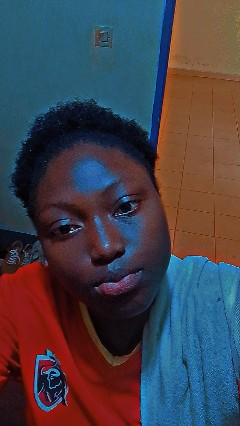
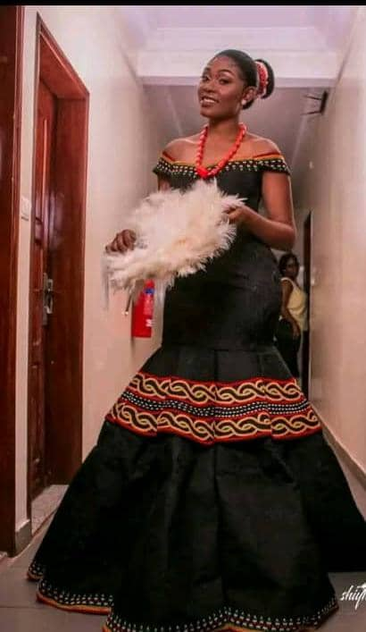
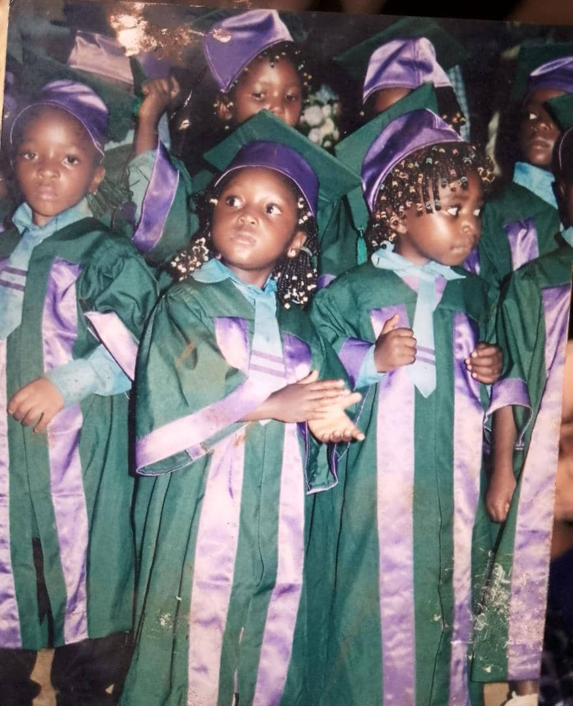
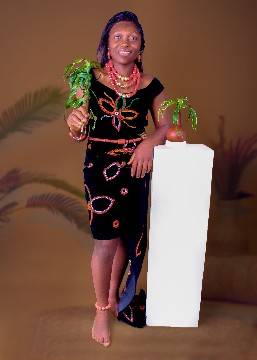

I work on frontend website development. I am still a beginner in this field. So I can only work on HTML, CSS and JavaScript for now not yet verse with backend and API application.

Apart from website development I'm a designer not in tech but a dress designer. I design traditional dresses both for weddings and parties . I'm a level 300 student in the University of Bamenda studying computer engineering. I've not choosen a field to specialize in but website development is one thing I really love doing.
Read MoreAs a frontend developer and a student in NAHPI during my first year internship I'm currently studying website development. And it's quite a good expirience as I explore my skills everyday new designs. HTML,CSS and JavaScript are the basic skills for my frontend skills.
A design of any piece of my dress is worth it. I design anything concerning tradition. Traditon is one thing in the North West Region that has always been cosidered very important.
As a frontend developer and a student in NAHPI during my first year internship I'm currently studying website development. And it's quite a good expirience as I explore my skills everyday new designs.

This is the second traditional wedding dress I ever made as a designer.This dress presents the uniqueness of our culture. All this types of dresses are considered as the representation to cameroon culture.And it is mostly known as the North Westeners dress in Cameroon. Very unique and great.

This is the second traditional wedding dress I ever made as a designer.This dress presents the uniqueness of our culture. All this types of dresses are considered as the representation to cameroon culture.And it is mostly known as the North Westeners dress in Cameroon. Very unique and great.

This is the second traditional wedding dress I ever made as a designer.This dress presents the uniqueness of our culture. All this types of dresses are considered as the representation to cameroon culture.And it is mostly known as the North Westeners dress in Cameroon. Very unique and great.